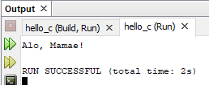

2019-08-30
Veremos a seguir vários termos usados em computação para um conjunto de instruções:
Um processo é um programa em execução. Um programa de computação não passa de um texto numa linguagem. O programa executável precisa está carregado na memória principal para executar. Sua execução implica em uso de recursos físicos do computador, como processador, memória, dispositivos de Entradas e Saídas, e de recursos virtuais fornecidos pelo sistema operacional e outros SWs de apoio, como sistema de janelas. Enquanto está executando, o programa em execução está em diferentes estados, a instrução que ele está executando muda constantemente, o conteúdo dos registradores na CPU mudam, etc. Os dados na memória principal mudam tanto de valor quanto de quantidade. Por isso tudo, o nome de processo é dado para um programa em execução. Observe que na maioria dos computadores, temos vários processos em execução simultaneamente. Temos mais processos do que núcleos (cores) de CPU. Isto é possível graças aos sistemas operacionais que compartilham os núcleos entre os processos.
Os sistemas operacionais também permitem que os programas sejam escritos como se não houvessem outros processos rodando com o seu programa. Seria muito complicado se ao escrever seu programa fosse necessário prever quais outros estão executando ao mesmo tempo. O sistema operacional cria um ambiente virtual para cada programa executar como se estivesse sozinho no computador. Neste ambiente virtual, cada processo enxerga uma memória virtual muito maior do que a memória física existente no computador.
Chamamos esta visão da memória de espaço de memória do programa, ou processo. Ela é dividida em duas partes: texto e dados. O código do programa, as instruções, são carregadas pelo SO na parte texto. A parte de dados é subdividida em duas partes: heap e pilha (stack). As variáveis globais e estáticas são alocadas no heap pelo compilador. Ao criar objetos ou pedir áreas de memória ao SO, o SO aloca estes pedaços de memória no heap. Os endereços de retorno das chamadas de subprogramas são colocadas na pilha. Além disso, as variáveis locais e argumentos de funções, métodos e procedimentos são alocadas automaticamente na pilha quando o subprograma é chamado, elas também são desalocadas automaticamente quando o subprograma retorna da chamada. Estas alocações dinâmicas fazem com que as áreas de memória cresçam e diminuam dinamicamente durante a execução de um programa.
Pelo fato das variáveis locais das funções não existirem fora da execução das chamadas, referências (ponteiros) para estas variáveis podem produzir greves erros.
Para detalhes de instalação do NetBeans e introdução à programação Java, acesse a apostilha de NetBeans. Como o NetBeans já será usado como IDE (Integrated Development Environment) para a programação Java, também usaremos o NetBeans para programar aplicações em C.
Inicie o NetBeans e Comece um Novo Projeto C/C++ - Aplicação C/C++ 1.1 Forneça o nome que você preferir 1.2 O NetBeans por default seleciona como linguagem C++, vá na seleção da linguagem e selecione C;
No quadro de navegação, abra o Arquivos Códigos-Fonte e ative o arquivo main.c;
No quadro de edição, antes da linha da instrução return acrescente na linha em branco, o código abaixo:
Respeite a tabulação do código.
Tirando os comentários automáticos, o programa é:
#include <stdio.h>
#include <stdlib.h>
int main(int argc, char** argv) {
printf("Alo, Mamae!\n");
return (EXIT_SUCCESS);
}As duas primeiras linhas que começam com #include, não são linhas de código C, elas são linhas de código para o pre-compilador C. Antes de compilar um arquivo fonte C, geralmente, fazemos uma pré-compilação. O pré-compilador reconhece instruções que começam com #. O #include diz para o pré-compilador incluir, ou melhor dizendo, substituir a linha do #include por um arquivo. O arquivo stdio.h é um arquivo do sistema que contém diversas declarações de C, entre elas o protótipo da função printf(). Antes de chamar uma função, precisamos declarar o protótipo da função para o compilador.
O primeiro #include serve para fornecer o protótipo do printf() e o segundo serve para fornecer a constante, (macro), EXIT_SUCCESS, cujo valor é 0.
Um programa C sempre tem uma função main() que é a função que o carregador de programas do SO chama para executar o programa depois de trazer o programa para a memória principal. Na aula passada foi explicado que a main() do C tem 3 protótipos:
No caso do programa acima, o NetBeans automaticamente usou o segundo protótipo que permite recuperar o nome do programa na variável argv[0] e os outros argumentos passados ao executar o programa. Veremos como passar argumentos e processá-los numa próxima aula.
A função main() retorna um inteiro, geralmente 0 quando o programa não termina com algum erro. Como números não carregam seu significado com eles, uma macro foi definida no arquivo stdlib.h com o nome EXIT_SUCCESS com o valor 0. Assim, fica claro que o main() retorna o valor de término com sucesso. Antes de terminar o programa na instrução return, a instrução printf("Alo, Mamae!\n") imprime na saída (aba de saída no quadro abaixo da tela de edição) a mensagem Alo, Mamae!. Salta uma linha e mostra quanto tempo durou a execução do programa (isto é feito pelo NetBeans). 
Vamos usar arquivos cabeçalho e arquivo de código sem main() para dividir nossos programas.
Ou
#include "alo.h"
#include <stdlib.h>
int main(int argc, char** argv) {
alo();
return (EXIT_SUCCESS);
}Insira um breakpoint (ponto de parada) antes da chamada de alo() e outro depois. Para inserir um breakpoint clique no número da linha do programa onde você deseja inserí-lo. Para cancelar o breakpoint, basta clicar de novo nele.
Execute no modo de depuração, o play com uma imagem de um breakpoint. Veja que o programa para de executar no primeiro breakpoint. Mas o indicador de que o programa ainda está rodando mostra que o programa não terminou. No quadro inferior, existe uma aba com o título de variáveis. Nela estão as variáveis do ponto de parada e seus valores. Como o programa alo não tem nenhuma variável por enquanto, só veremos os parâmetros da main(), argc e argv. argc tem o valor 1, o que significa que o vetor de sequências de caracteres argv tem um elemento. O valor de argv é o endereço de memória onde está o vetor de argumentos da chamada do programa. Ao clicar no + do argv, você verá o path do arquivo do programa.
Vá para o próximo breakpoint clicando no play com botão circular.
Termine o programa clicando mais uma vez no play circular.
\n? No lugar de \n, experimente usar um \t e um \t\t. printf("linha 1\n");
printf("linha 2\n");E veja o que ocorre se você retirar o \n do primeiro printf(). 3. Declare uma variável inteira no main(), inicialize com um valor, por exemplo 42, e mude o valor para outro qualquer. Coloque um breakpoint antes da mudança e outro depois. Rode o depurador e veja o que acontece com o valor da variável no depurador nos 2 pontos de parada.